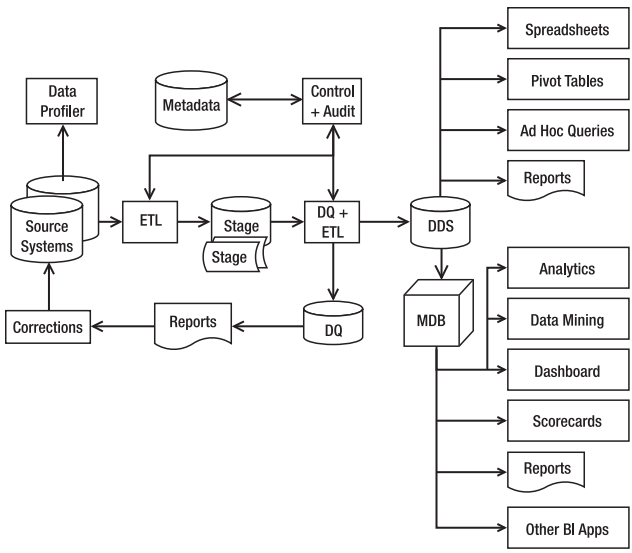
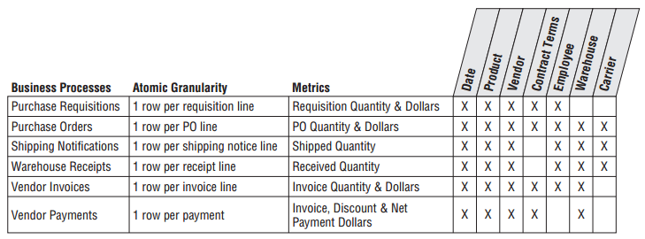
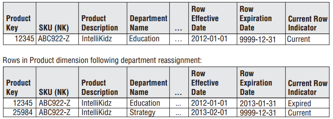
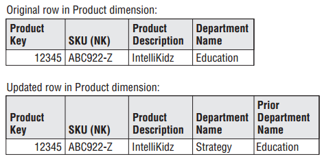
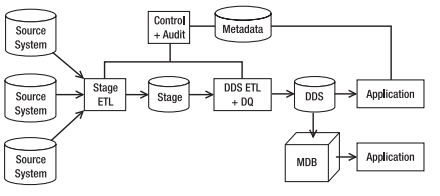
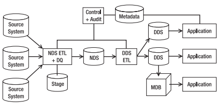
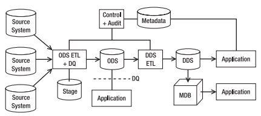
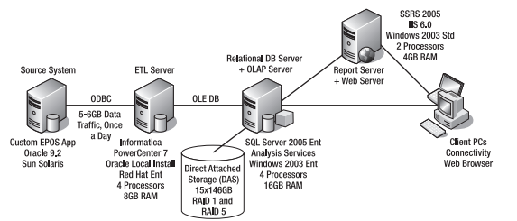

Data Warehouse Modelling
knitr::opts_chunk$set(echo = TRUE)
Giới thiệu
Kho dữ liệu tập trung (DWH) là một hệ thống thu thập, tổng hợp và làm sạch dữ liệu định kỳ từ các hệ thống nguồn (source system) thành dữ liệu có cấu trúc được chuẩn hoá (normalized) nhiều chiều. Dữ liệu trong DWH thường được xử lý theo nhóm (batches)
Data Warehouse (DWH) cần phải đảm bảo các mục tiêu sau:
Dễ dàng truy cập nhanh chóng
Đồng nhất dữ liệu
Có khả năng thay đổi theo nhu cầu nghiệp vụ
Sơ đồ tổng quan luồng dữ liệu

Các cấu phần quan trọng nhất của DWH bao gồm:
Source system: Các hệ thống nguồn, còn được gọi là OLTP (Online Transaction Processing), dùng để lưu trữ các giao dịch của khách hàng theo từng hệ thốngData Profiler: Công cụ để đánh giá dữ liệu của hệ thống nguồn, ví dụ: Có bao nhiêu giá trị NULL, số lượng dòng/cột trong mỗi bảng từ nguồnETL: Quá trìnhExtract - Transform - Loaddữ liệuDDS: Dimensional Data Store - nguồn dữ liệu đã được chuẩn hoá và lưu trữ tập trung. Nguồn dữ liệu có cấu trúc khác so với hệ thống nguồn (OLTP)DQ: Data Quality, kiểm soát chất lượng dữ liệu sau khi đi vào DWH. Nếu chất lượng dữ liệu đảm bảo, sẽ được sử dụng tiếp trong các hoạt động khai thác tiếp theo.
Data consolidation
Khi tổng hợp lại dữ liệu từ các nguồn khác nhau, có các vấn đề sau cần phải tính toán:
Data availability: Mỗi hệ thống có những nhóm dữ liệu khác nhau. VD: Hệ thống T24 có thể có address1, address2,... nhưng trong hệ thống Online Banking chỉ có 1 giá trị address
Time ranges: Khi tổng hơp dữ liệu, cần phải xét cùng trong 1 khoảng thời gian.
Definition: Cùng tên 1 trường thông tin nhưng trong mỗi hệ thống khác nhau lại có ý nghĩa khác nhau.
Conversion: Khác nhau về các đơn vị, múi giờ và thời gian trong từng hệ thống... VD: Dữ liệu quẹt thẻ tín dụng đưa về Master Card theo GMT+0, trong khi lưu trữ của W4 tại ngân hàng trong nước là GMT+7
Matching: Quá trình xác định các đối tượng duy nhất giữa các hệ thống. VD: CustomerID trong T24 cần phải khớp với UserID trong hệ thống Internet Banking
Dữ liệu trong DWH được update theo batch (chốt ngày hoặc chốt thời gian dữ liệu), mục tiêu để giữ nguồn dữ liệu phân tích đảm bảo tính ổn định tương đối khi phân tích
ODS - Operational Data Store: Là nguồn dữ liệu được update theo thời gian thực (real/near real time) từ hệ thống nguồn. Khi dữ liệu từ Source System thay đổi, dữ liệu ODS sẽ thay đổi ngay lập tức tương ứng.
Master Data Management
Trong hệ thống nguồn OLTP, có 2 loại dữ liệu chính:
Transaction: Là dữ liệu giao dịch hoặc business event
Master: Đối tượng tham gia trong transaction
Ví dụ: Công ty vận tải có 10 tài xế với 8 chiếc xe, di chuyển 1 ngày được 1000 tuyến.
Mỗi chuyến xe bus từ điểm A đến điểm B là 1 giao dịch
Đối tượng tham gia trực tiếp vào giao dịch (tài xế, xe bus, khách hàng) là master data
Trách nhiệm của vị trí quản lý dữ liệu rất đa dạng:
Hiểu nhu cầu người dùng
Đảm bảo sự chính xác và đồng nhất của dữ liệu giữa các mảng nghiệp vụ lớn
Duy trì được sự tin tưởng của người dùng với kho dữ liệu tập trung
Modelling phải trải qua 4 bước:
Xác định chính xác business process:
Xác định
graintrong fact table: Trả lời câu hỏi, một dòng trong fact table có ý nghĩa là gì?Xác định dimension
Xác định facts
Khi xây dựng Data Model, có 2 loại bảng chính: Dim & Fact
Measure (Facts): Là các chỉ số được sử dụng tổng hợp, tính toán như doanh số bán hàng, số lượng hàng tồn kho,...
Dimension là các chiều để đánh giá chính xác context (bối cảnh) quanh chỉ số cần phan tích
Facts
Nếu chia theo thuộc tính cộng, measure có 3 nhóm sau: - Additive - như số lượng đơn hàng. Tổng số hàng cả nước là tổng số hàng mỗi đơn vị - Semi-additive - Số lượng khách hàng trong cả nước ko hẳn là tổng số khách hàng mỗi đơn vị do 1 khách hàng có thể thuộc nhiều đơn vị - Non-additive: Không thể cộng tổng lại. VD: Tỷ lệ phần trăm lợi nhuận của toàn hàng không phải là tổng tỷ lệ phần trăm lợi nhuận mỗi đơn vị
Ngoài ra, facts còn có thể có các nhóm sau:
Transaction Fact: đo lường chỉ tiêu tại 1 điểm thời gian, không gian cụ thể. VD: Bảng giá trị giao dịch theo thời gian giao dịchPeriodic Snapshot Fact: Đo lường các chỉ tiêu tại 1 khoảng thời gian cụ thể VD: Tổng giá trị giải ngân/ADB giải ngân trong thángAccumulating Snapshot Fact: Đo lường chỉ tiêu luỹ kế tại 1 thời điểm. VD:Số lượng khách hàng active luỹ kế tại thời điểm, tổng số tiền giải ngân luỹ kế
Số điểm loyalty hiện hữu tại 1 thời điểm của 1 khách hàng
Factless fact: Trường hợp tìm kiếm và tổng hợp measure không xuất hiện thực tế. VD: Tìm số lượng khách hàng không giao dịch trong 1 khoảng thời gian.
Các thuộc tính của facts thường không khác biệt giữa các nhóm ngành khác sau.
So sánh các kiểu bảng facts như sau:
+----------------+----------------------------------------------+------------------------------------------------------------------------------------------+------------------------------------------------------------------------+ | Tiêu chí | Transaction | Periodic Snapshot | Accumulating Snapshot | +================+==============================================+==========================================================================================+========================================================================+ | Chu kỳ | Mang tính thời điểm, thời gian xảy ra event. | Mang tính chu kỳ xác định trước, lặp lại định kỳ. | Không xác định cụ thể | | | | | | | | | VD: Tổng số giao dịch hàng tháng sẽ được lấy trong khoảng thời gian từ đầu đến hết tháng | | +----------------+----------------------------------------------+------------------------------------------------------------------------------------------+------------------------------------------------------------------------+ | Grain (Độ mịn) | Mỗi dòng thể hiện 1 giao dịch (event) | Mỗi dòng thể hiện snapshot của chỉ tiêu trong khoảng thời gian xác đinh | Mỗi dòng thể hiện số luỹ kế trong khoảng thời gian chưa xác định trước | +----------------+----------------------------------------------+------------------------------------------------------------------------------------------+------------------------------------------------------------------------+ | Thời gian | Điểm thời gian | Khoảng thời gian | NA | +----------------+----------------------------------------------+------------------------------------------------------------------------------------------+------------------------------------------------------------------------+
Lưu ý: Nên tránh xây báo cáo lẫn lộn cả nhóm fact transaction lẫn nhóm chu kỳ
Thông thường, mỗi fact cần được tách theo từng business process riêng. Tuy nhiên, khi tổng hợp cùng lúc nhiều facts thuộc nhiều process và cùng một granularity, facts đó được gọi là consolidated fact tables.
Các trường hợp tổng hợp lại sẽ hỗ trợ tốt nhóm báo cáo nhiều chỉ tiêu, nhưng do mỗi facts có các đặc thù về độ mịn (granularity) khác nhau, nên khi cần drill down, sẽ gặp khó khăn.
Dimension
Dimension: Là chiều để tổng hợp các chỉ số. Dimension dùng để trả lời các câu hỏi "who, what, where, when, how" quanh một chỉ số nhất định. Dimension có các nhóm sau - Hieararchy: Là độ chi tiết và phân tầng thứ tự của dimension, thuộc tính này còn được gọi là
granularity. VD:Chi nhánh < Thành phố < Vùng- Slow changing dimension: Các dimension có thể thay đổi theo thời gian. VD: Khi mở thêm chi nhánh, sẽ có thêm dimension Branch_name. Đối với loại này, cần có thểm thông tin effective date - Time dimension: Loại dimension rất đặc biệt, có thể có các dạng sau: - Theo lịch:Year > Month > Date hoặc Year > Month > Week > Weekday > Date- Theo năm tài chính: Fiscal year
Lưu ý: Số liệu định dạng số liên tục thường là measure, số liệu định dạng số rời rạc thường là dim. Ta có thể biến measure thành dimension bằng cách biến đổi dữ liệu numeric về thành dạng group.
Các kiểu dimension như sau:
Dimension Surrogate Keys: Một cột làm key duy nhấtNatural/Durable & Supernatural Keys: Khoá tự nhiên (natural) do hệ thống tự sinh. Durable (còn gọi là supernatural key) là key được điều chỉnh để đảm bảo tính đồng nhất của 1 đối tượng. Ví dụ, nhân sự nghỉ việc, khi quay lại vẫn giữ cùng 1 mã ID duy nhất
Enterprise DWH Bus Architecture là kỹ thuật chia nhỏ DWH/BI process thành các đơn vị nhỏ để quản lý và tái sử dụng.
Enterprise DWH Bus Matrix là ma trận phân tích các chiều (dimension) theo từng business process.

Một số kiểu của SCD (Slowly Changing Dimension) thường dùng:
Type 0: Giữ nguyên giá trị, thường dùng với date dimension
Type 1: Ghi đè giá trị cũ
Type 2: Thêm dòng mới, có thêm ngày hiệu lực và kết thúc hiệu lực

Type 3: Chỉ ghi giá trị mới nhất nhưng thêm thông tin giá trị gần nhất trong cùng 1 dòng. Type 3 có thể mở rộng có thêm nhiều giá trị khác ở thời điểm trước trong cùng 1 dòng.

Kiến trúc DWH
Trong DWH có 3 cấu phần:
System architecture: Kiến trúc về phần cứng vật lý của hệ thốngData architecture: Kiến trúc quy hoạch các phân vùng dữ liệu để phục vụ từng mảng nghiệp vụ khác nhau. Việc quy hoạch các phân vùng cụ thể theo từng bảng, từng trường là nghiệp vụ củadata modellingData flow architecture: Kiến trúc về luồng đi của dữ liệu từ các hệ thống khác nhau sao cho tối ưu nhất
Data flow architecture
Nếu phân loại theo tầng người dùng cuối sử dụng, phần dữ liệu có thể được chia làm 3 nhóm:
User facing data: Dữ liệu được người dùng cuối truy cập và queryInternal data: Dữ liệu chỉ sử dụng nội bộ trong DWH, người dùng cuối không được quyền truy cậpHybrid data: Hybrid cả user-facing data và internal data
Nếu phân loại theo các phân tầng (các lớp) thì có thể phân loại 4 loại như sau:
Stage: Dữ liệu 1-1 từ nguồn, đây là tầng raw data trong DWHNormalized Data Store(NDS): Tầng dữ liệu được chuẩn hóa, được tích hợp từ nhiều nguồn, loại bỏ các dữ liệu thừa trước khi được đưa vào tầng user-facingOperational Data Store(ODS): Là nhóm thuộc dạng "Hybrid Data Store", lưu trữ phiên bản mới nhất của master data khi có sự thay đổiDimensional Data Store(DDS): Là tầng user-facing data, dữ liệu đã được sắp xếp theo nhiều chiều để hỗ trợ phân tích và tổng hợp
Kiến trúc của DWH có thể có từ 2 đến 4 tầng, chia làm 3 loại như sau:
Stage + DDS
Stage + NDS + DDS
Stage + NDS + ODS + DDS
Các kiến trúc tương ứng

Kiến trúc 3 tầng Stage + NDS + DDS

Kiến trúc Stage + NDS/ODS + DDS

System architecture
